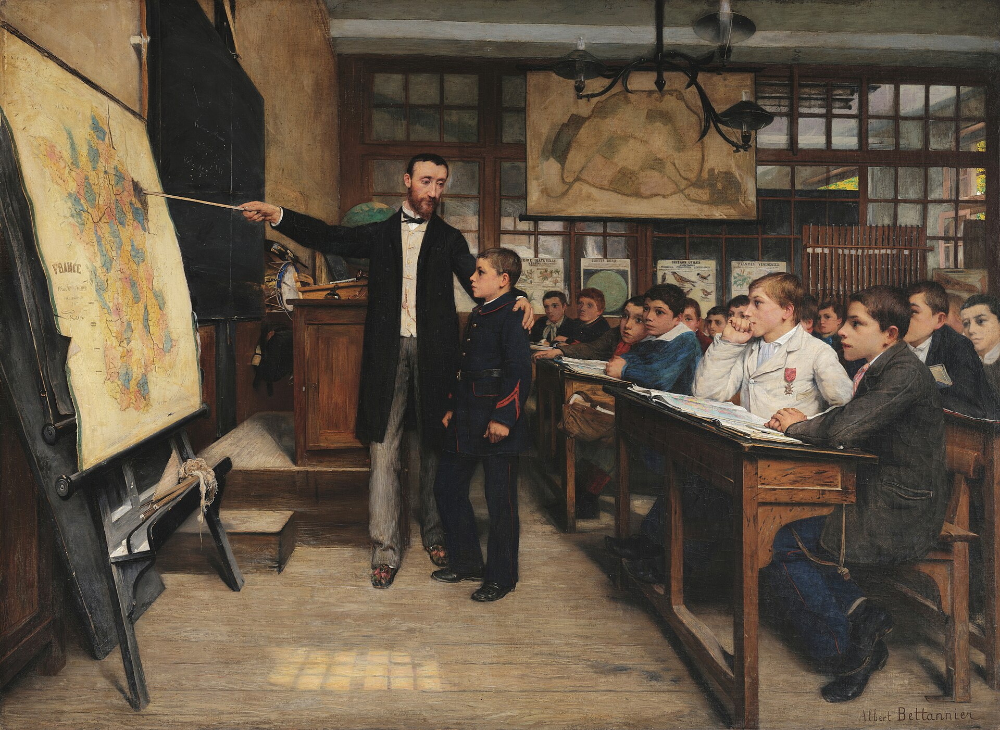

Complete Unit
KS3: Causes of the Great War
Course Textbook
Enquiry: How did decades of imperial rivalry and fear culminate in thirty days of madness?
Contents
|
Lesson 1: How was the German Empire created in 1871?
|
|
|
Lesson 2: How did the Franco-Prussian War create a lasting legacy of hatred?
|
|
|
Lesson 3: To what extent did the 'Scramble for Africa' increase tension in Europe?
|
|
|
Lesson 4: Why did a battleship building contest destroy Anglo-German relations?
|
|
|
Lesson 5: Did the Alliance System protect Europe or guarantee a global war?
|
|
|
Lesson 6: Why did a single assassination in Sarajevo ignite a World War?
|
|
L1: How was the German Empire created in 1871?[[SRC_MARKER:L0_Start]]
Learning Objectives
Understand how Otto von Bismarck used 'blood and iron' to unify the German states.
Analyze the geographical impact of the new German Empire on the balance of power in Europe.
Vocabulary Check
The Odd One Out: Circle ONE term that does not belong with the others. Explain your reasoning: What historical connection links the other terms, and why is your chosen term different?
Chancellor | Blood and Iron
Teacher Model / Pupil Reasoning:
[[SRC_MARKER:L0_Source_0]]
Source S1 (Cartographic Record): The German Empire in Central Europe (1871)
Geopolitical map showing the unification of thirty-nine sovereign German states into the German Empire under Prussian leadership in 1871.
[1.1] For centuries following the 1648 Peace of Westphalia, Central Europe remained a politically fragmented patchwork of hundreds of small, independent German-speaking principalities, duchies, and bishoprics. In 1815, the Congress of Vienna consolidated these territories into a loose confederation of thirty-nine sovereign states (
Source A), within which two Great Powers fiercely competed for continental pre-eminence: the Catholic Austrian Empire and the Protestant military Kingdom of Prussia. While Austria remained an agrarian, multi-ethnic empire preoccupied with holding together its restive nationalities, Prussia underwent an explosive industrial transformation fueled by the rich coal and iron deposits of the Ruhr Valley and Silesia.
[1.2] In 1834, Prussia secured a decisive geopolitical masterstroke by establishing the
Zollverein (Customs Union). By dismantling internal tariffs between German states while erecting protective customs walls against foreign imports, the
Zollverein bound the economies of northern and central Germany inexorably to Berlin. Austria, crippled by its protectionist economic model, was deliberately excluded. Through the rapid construction of an integrated railway network, Prussia proved that industrial efficiency, economic prosperity, and modernized communication belonged to Berlin, establishing the economic foundation for political unification.
[2.1] In 1862, King Wilhelm I of Prussia appointed a ruthless, arch-conservative Junker nobleman named
Otto von Bismarck as Minister President. Bismarck possessed an unyielding contempt for parliamentary liberalism and democratic debate. In his maiden address to the Prussian budget committee, he issued a stark manifesto that would define the era:
"The great questions of the day will not be decided by speeches and resolutions of majorities... but by blood and iron." By "blood," Bismarck meant the sacrifice of conscripted soldiers; by "iron," he meant the devastating technological superiority of Prussian Krupp steel artillery, breech-loading Dreyse needle-guns, and precise military railway timetables.
[2.2] Bismarck orchestrated three short, ruthlessly calculated diplomatic and military campaigns. In 1864, Prussia allied with Austria to defeat Denmark, securing Schleswig-Holstein. In 1866, Bismarck turned upon Austria in the Seven Weeks’ War; the modernized Prussian army under General Helmuth von Moltke annihilated Austrian forces at Königgrätz, expelling Austria permanently from German affairs and forming the North German Confederation. Finally, to unite the hesitant, Catholic southern German kingdoms (Bavaria, Württemberg, and Baden), Bismarck provoked France into declaring war in 1870. The Franco-Prussian War saw Prussian forces crush the French army at Sedan, capture Emperor Napoleon III, and advance to besiege Paris.
[[SRC_MARKER:L0_Source_2]]
Source S2 (Comparative Cartography): Modern European Boundaries vs 1871 Frontiers
Comparative cartography overlaying 1871 German imperial boundaries onto modern sovereign European borders.
[3.1] On 18 January 1871, inside the sacred heart of French monarchical grandeur—the
Hall of Mirrors at the Palace of Versailles—Bismarck staged the supreme coronation. Amidst a sea of Prussian helmets and military banners, King Wilhelm I was proclaimed the first German Emperor (Kaiser). The location was a calculated act of psychological subjugation: German princes cheered the birth of the Kaiserreich while German artillery shells were actively bombarding Paris just twelve miles away. Under the 1871 Treaty of Frankfurt, the defeated French Republic was forced to pay a punitive indemnity of five billion gold francs and surrender the vital industrial provinces of Alsace and northern Lorraine.
[3.2] Forensic analysis of the 1871 imperial frontiers reveals the monumental scale of the new Empire. Spanning over 540,000 square kilometers with 41 million citizens, the German Empire instantly formed the demographic and industrial colossus of continental Europe. Yet comparative modern cartography (
Source B) highlights Germany’s profound geographic vulnerability: positioned squarely in the center of Europe with few natural frontiers, Germany was permanently vulnerable to simultaneous assault from the west (France) and the east (Russia).
[4.1] Historians remain sharply divided over Bismarck’s ultimate legacy. Traditional German historiography praised Bismarck as a genius of
Realpolitik—a visionary statesman who masterminded a predetermined master plan for national unity. Conversely, revisionist historians such as A.J.P. Taylor demonstrate that Bismarck was primarily an opportunistic political gambler who reacted pragmatically to crises, using warfare to preserve Prussian aristocratic power against the rising tide of working-class socialism and liberal democracy.
[4.2] Whatever his personal motives, the consequences of 1871 were revolutionary. British statesman Benjamin Disraeli told Parliament that the German unification was a greater political event than the French Revolution:
"The balance of power has been entirely destroyed." By annexing Alsace-Lorraine and humiliating France at Versailles, Bismarck created an irreconcilable enemy on Germany’s western border. For the next twenty years, Bismarck would devote his diplomatic career to an intricate web of alliances designed to keep France isolated, terrified that the newly united Germany would one day be crushed in a catastrophic two-front war.
Pair & Share Activity
Q1. Discuss with your partner: Was the German Empire created 'from below' by the people or 'from above' by military force?
Active Tasks
Q2. Was the German Empire forged through master diplomacy or ruthless military aggression?
Q3. Explain how Otto von Bismarck used "blood and iron" and diplomatic calculation to forge the German Empire in 1871.
L2: How did the Franco-Prussian War create a lasting legacy of hatred?[[SRC_MARKER:L1_Start]]
Learning Objectives
Identify the penalties forced upon France in 1871.
Explain how the Ems Telegram sparked the Franco-Prussian War.
Evaluate the long-term impact on European relations.
Vocabulary Check
The Golden Sentence: Choose TWO terms from the word bank. Write ONE grammatically sophisticated, historically accurate sentence connecting them using a causal conjunction (because, although, or consequently):
Chancellor | Blood and Iron | Revanche | Annexation | Indemnity | Two-Front War | North German Confederation | Reinsurance Treaty
Teacher Model / Pupil Sentence:[1.1] In the late 1860s, Emperor Napoleon III of France watched with growing dread as Prussia eclipsed Austrian influence and unified northern Germany under the North German Confederation. France had long considered itself the supreme military arbiter of mainland Europe. When Queen Isabella II of Spain was deposed in a military revolution in 1868, the provisional Spanish government quietly offered the vacant crown to Prince Leopold of Hohenzollern-Sigmaringen—a Catholic cadet branch of the Prussian royal house. The terrifying prospect of a Hohenzollern monarch reigning on both the Rhine and the Pyrenees provoked near-hysterical outrage in Paris. French foreign minister Antoine de Gramont delivered an incendiary parliamentary speech declaring that France would not permit a foreign power to encircle the nation. Alarmed by the threat of war, Prince Leopold prudently withdrew his candidacy. It was a complete, bloodless diplomatic triumph for France.
[1.2] But Paris was not satisfied with victory; it demanded humiliation. Gramont ordered the French ambassador, Count Vincent Benedetti, to pursue King Wilhelm I of Prussia to the tranquil spa town of Bad Ems. Accosting the elderly monarch on the public garden promenade, Benedetti demanded a binding, written guarantee that no Hohenzollern would ever again accept the Spanish crown. King Wilhelm politely but firmly declined, stating that he could make no such indefinite pledge, and later that afternoon sent a factual telegraphic dispatch of the exchange to Chancellor Otto von Bismarck in Berlin. Bismarck was dining in sullen despondency with General Helmuth von Moltke and War Minister Albrecht von Roon, mourning that a glorious opportunity to unite Germany had slipped away. Reading the King’s telegram, Bismarck asked Moltke whether the Prussian army was ready for war. Moltke replied that immediate conflict was vastly preferable to delay. Bismarck picked up his heavy pencil. Without altering or inventing a single word, he ruthlessly struck out the King’s polite explanations, condensing the text so that King Wilhelm appeared to have snubbed the French ambassador, and Benedetti appeared to have insulted the Prussian crown. Leaked to the European press on Bastille Day (14 July 1870), the edited
Ems Telegram acted, in Bismarck’s famous phrase, as "a red rag to the Gallic bull." Enraged Parisian crowds marched down the boulevards shouting
"À Berlin!". On 19 July 1870, France declared war—walking straight into Bismarck’s diplomatic snare as the reckless aggressor, which automatically triggered mutual defense treaties binding the independent southern German kingdoms of Bavaria, Württemberg, and Baden to Prussian arms.
[2.1] The French military high command entered the conflict with supreme arrogance, boasting that the Imperial Army would cross the Rhine and dictate peace in Berlin within weeks. French infantry possessed the state-of-the-art
Chassepot rifle, whose 1,200-meter range far outstripped the Prussian Dreyse needle-gun. Yet French arrogance was instantly crushed by the terrifying efficiency of the Prussian General Staff under Field Marshal Helmuth von Moltke. Mobilizing 380,000 highly disciplined troops across six dedicated railway trunk lines with mathematical precision, the German armies struck with overwhelming speed before French reserves could even find their boots. Crucially, Prussia fielded revolutionary breech-loading cast-steel cannons manufactured by Alfred Krupp. While French bronze muzzle-loaders struggled to fire two rounds a minute with inaccurate time-fuses, Krupp’s steel artillery hammered French positions with rapid, pinpoint explosive percussion shells from three miles away. On 1 September 1870 at the
Battle of Sedan, Moltke trapped the principal French army in a deadly cauldron surrounded by Krupp guns. After enduring 17,000 casualties in hours, Emperor Napoleon III surrendered with 104,000 soldiers, handing his imperial sword to King Wilhelm. The French Second Empire collapsed overnight, and in Paris an angry republic—the Third Republic—was proclaimed, vowing to fight on to the last drop of blood.
[2.2] Rather than capitulating, the desperate French Republic attempted a national people's war. By late September 1870, Prussian armies had encircled Paris, tightening a brutal blockade around two million trapped civilians. For over four agonizing winter months, temperatures plummeted to -12°C. With coal exhausted and food supplies severed, Parisians suffered unspeakable privation. Butcher shops were converted to sell draft horses, then domestic cats and dogs, and eventually butcher stalls sold sewer rats at two francs apiece. In December 1870, the starving capital was reduced to slaughtering the famous pair of elephants, Castor and Pollux, from the Jardin des Plantes zoo to serve luxury restaurants for Christmas. When Krupp siege artillery began hurling shells into civilian residential quarters across the Seine, destroying homes and killing children, French resistance broke. Starving, freezing, and ravaged by smallpox and pneumonia, Paris capitulated on 28 January 1871. Bismarck had utterly shattered the military might of France.
[[SRC_MARKER:L1_Source_2]]
Source S1 (Visual Record): Albert Bettannier, La Tache Noire (The Black Spot, 1887)

Albert Bettannier’s iconic 1887 oil painting (Musée d’Orsay) depicting a French schoolmaster in a black coat pointing with a wooden pointer to the blacked-out region of Alsace-Lorraine on a classroom map of France, instructing a young pupil in a cadet uniform.
[3.1] The culmination of the war permanently shattered the continental balance of power and inflicted an agonizing humiliation upon the French nation. On 18 January 1871, ten days before Paris officially surrendered, the German princes and generals gathered in the magnificent Hall of Mirrors inside the Palace of Versailles—the historic sanctuary of Louis XIV and French monarchical glory. Surrounding King Wilhelm I, they formally proclaimed the birth of the unified German Empire (the
Kaiserreich). Staging this imperial triumph on conquered French soil was a deliberate, calculated blow designed to announce Germany’s military supremacy to the world. Four months later, under the
Treaty of Frankfurt (May 1871), Bismarck exacted three crushing penalties: France was compelled to cede the strategic borderland of
Alsace and northern Lorraine (
Source A), pay an astronomical war indemnity of five billion gold francs within three years, and endure a German army of occupation garrisoned on French soil until the final gold coin was delivered.
[3.2] The annexation of Alsace-Lorraine proved to be an insurmountable catastrophe for European peace. By seizing these border provinces, Germany stripped France of 1.5 million French-speaking and German-dialect citizens, vital coalfields, major textile factories, and 80% of France’s domestic iron ore reserves. German military engineers rapidly fortified the strategic fortress cities of Metz and Strasbourg, transforming the region into an impregnable military shield protecting the Rhineland. Across France, this territorial amputation generated an all-consuming, institutionalized culture of mourning and vengeance known as
la revanche (the revenge). In elementary schools across the Third Republic, educational paintings such as Albert Bettannier’s
La Tache Noire (The Black Spot, 1887,
Source B) immortalized the classroom ritual: a solemn schoolmaster in a black coat points a wooden wand at Alsace-Lorraine shaded in mourning black on the national map, commanding young boys dressed in paramilitary cadet uniforms never to forget their stolen homeland. In Paris, the statue representing the lost city of Strasbourg in the Place de la Concorde was draped in black mourning crêpe and covered in funeral wreaths continuously until 1918. Politician Léon Gambetta minted France’s unyielding national commandment:
"Think of it always; speak of it never." [4.1] Diplomatic historians and military analysts have long debated whether Bismarck’s annexation of Alsace-Lorraine was his most brilliant conquest or his most catastrophic strategic blunder. Bismarck himself privately harbored severe doubts about taking Lorraine, warning that annexing a fiercely French-speaking population around Metz would create an incurable sore. However, he was bullied and overruled by Field Marshal von Moltke and the Prussian General Staff, who stubbornly insisted that the fortress of Metz was a military necessity to guard against future French invasion. Eminent diplomatic historian Gordon Craig argued that by yielding to military planners and prioritizing immediate defensive geography over long-term political reconciliation, Bismarck committed a fatal paradox: he won a tactical border shield but made a permanent, irreconcilable enemy of France, foreclosing any prospect of enduring European stability.
[4.2] The devastating long-term consequence of 1871 was the complete militarization and polarization of continental statecraft. Understanding that France would never forgive the loss of Alsace-Lorraine, Bismarck spent the following twenty years trapped in a perpetual nightmare: the dread of a "two-front war" where France would ally with another great power—most terrifyingly Tsarist Russia—to crush Germany from both east and west. To prevent this, Bismarck was forced to construct an increasingly intricate, fragile web of secret treaties, weaving the Triple Alliance (with Austria-Hungary and Italy in 1882) and the secret Reinsurance Treaty with Russia (1887) to keep France diplomatically isolated. But when the impetuous young Kaiser Wilhelm II dismissed Bismarck in 1890 and reckless Berlin diplomats allowed the Russian treaty to lapse, the inevitable occurred: in 1894, Tsarist Russia and Republican France forged a military alliance. The tragic trap had closed. The hatred forged in the snows of Paris, the black-bordered maps of French classrooms, and the Krupp guns of Sedan guaranteed that when the crisis of 1914 erupted, France would march into the abyss not merely for imperial prestige, but to settle the unfinished business of 1870.
Pair & Share Activity
Q1. Of the three penalties forced upon France in the 1871 treaty (loss of land, 5 billion franc fine, German occupation), which do you think caused the most bitter resentment, and why?
Active Tasks
Q2. Did the annexation of Alsace-Lorraine protect Germany or make a future European war inevitable?
Q3. Explain why the Franco-Prussian War created a lasting legacy of hatred between France and Germany.
Q4. Evaluate how the change in leadership from Bismarck to Kaiser Wilhelm II fundamentally altered Germany's strategic position in Europe.
GCSE Exam Practice
Q5. How useful are Sources A and B for an enquiry into the reasons for French hatred of Germany after 1871?
“We must never forget the humiliation of 1871. The German Empire was proclaimed in our own Palace of Versailles, tearing away the bleeding wounds of Alsace and Lorraine. They have stolen our iron and our factories, and forced us to pay a crushing ransom of 5 billion francs. Every French child must grow up with one single thought: to rebuild our army and take back what was stolen from the motherland.”
Source A: Adapted from a French school textbook, published in Paris, 1885.
“France will never forgive us for taking Alsace-Lorraine. The peace we have forced upon them has left a bitter resentment that will not fade. We must accept that a French war of revenge is a certainty in the future. Therefore, our entire diplomatic focus must be to ensure she never finds an ally to help her take it back. As long as France remains diplomatically isolated, particularly from Russia, Germany will remain secure.”
Source B: Adapted from a private letter written by German Chancellor Otto von Bismarck to a fellow diplomat, 1872.
L3: To what extent did the 'Scramble for Africa' increase tension in Europe?[[SRC_MARKER:L2_Start]]
Learning Objectives
Identify the main European colonial powers and their territories.
Explain how Kaiser Wilhelm II's 'Place in the Sun' policy threatened Britain.
Evaluate the impact of the Moroccan Crises on the Entente Cordiale.
Do Now Activity (Prior Knowledge Recall)
1. Who was the first Emperor of the newly unified Germany in 1871?
2. Which brilliant Chancellor united the German states?
3. Which country was humiliatingly defeated in the Franco-Prussian War?
4. What strategic border territory did Germany take in 1871?
5. What is the French word for their desire for revenge?
6. Explain how Bismarck used the Ems Telegram to trap France into a war.
7. Detail the two military advantages the Prussian army possessed.
8. Why was the location of the German Empire's proclamation so humiliating for France?
9. Why did Bismarck weave a complex web of secret alliances after 1871?
10. What was Bismarck's ultimate nightmare scenario?
Vocabulary Check
Conceptual Classification: Categorise the terms from the word bank into the two historical boxes below:
Imperialism | Scramble for Africa | Weltpolitik | Place in the Sun | Entente Cordiale | Algeciras Conference | Agadir Crisis | Gunboat Diplomacy | Berlin Conference | Congo Free State
Power, Governance & Warfare
Economy, Trade & Society
[[SRC_MARKER:L2_Source_0]]
Source S1 (Cartographic Record): The Partition of Africa by 1914
Map showing how European imperial powers divided the African continent by 1914, with Britain and France holding the largest territories.
[1.1] Throughout his tenure as Chancellor, Otto von Bismarck fiercely opposed acquiring overseas colonies, famously declaring:
"My map of Africa lies in Europe. Here is Russia, and here is France, and we are in the middle; that is my map of Africa." Bismarck recognized that overseas adventures would inevitably provoke friction with Great Britain, whose global empire and naval supremacy guarded the world’s maritime trade routes. To regulate imperial claims and prevent European warfare, Bismarck hosted the 1884–85
Berlin Conference, where European powers partitioned the African continent into colonial spheres without a single African leader present.
[1.2] However, when the ambitious and bellicose young Kaiser Wilhelm II ascended the throne in 1888, he chafed under Bismarck’s cautious diplomacy. In 1890, Wilhelm forced Bismarck to resign and proclaimed a new, aggressive foreign policy:
Weltpolitik (World Policy). Wilhelm declared that Germany’s explosive industrial growth entitled the Reich to a
"Platz an der Sonne" (a place in the sun)—a global colonial empire matching that of Britain and France. For Wilhelm, colonies were not merely economic assets, but the ultimate symbol of Great Power status.
[2.1] By the turn of the twentieth century, the vast majority of fertile African territory had been seized by Britain and France (Source A). Germany was left with arid, unprofitable colonies in Southwest Africa, Cameroon, and German East Africa. Feeling cheated, the Kaiser sought to exploit weak points in European colonial agreements. In 1904, Britain and France signed the
Entente Cordiale, a diplomatic agreement resolving long-standing imperial disputes: France recognized British control of Egypt, while Britain accepted French dominance over the independent Sultanate of Morocco.
[2.2] Determined to shatter this newfound Anglo-French friendship, Kaiser Wilhelm landed at the Moroccan port of Tangier in March 1905 riding a white charger. He publicly proclaimed his support for the Sultan’s complete sovereignty and demanded an international conference to review Morocco’s status. The gamble backfired catastrophically. At the 1906
Algeciras Conference, Britain, Russia, Italy, and the United States backed France; only Austria-Hungary supported Germany. Instead of driving a wedge between London and Paris, German posturing solidified the Entente Cordiale into a robust diplomatic partnership and initiated secret Anglo-French military staff talks.
[[SRC_MARKER:L2_Source_2]]
Source S2 (Visual Record): Gunboat Diplomacy: The SMS Panther at Agadir (1911)
Map detail and record of the colonial flashpoints in North Africa where German gunboat diplomacy challenged French control.
[3.1] Five years later, imperial rivalry flared into open confrontation during the
Second Moroccan Crisis (1911). When Moroccan tribes rebelled against the Sultan, France dispatched troops to occupy the capital, Fez. Accusing France of violating the Algeciras agreements, the German government dispatched the imperial gunboat
SMS Panther (Source B) to the Atlantic port of Agadir. This heavy-handed demonstration of "gunboat diplomacy" was intended to intimidate France into ceding the entire French Congo to Germany in exchange for accepting French control of Morocco.
[3.2] The arrival of a German warship on the Atlantic coast of Africa provoked panic and fury in London. British military strategists feared Germany intended to construct a fortified naval base at Agadir, threatening vital British sea routes to India and South Africa. Chancellor of the Exchequer David Lloyd George delivered the famous
Mansion House Speech, warning that Britain would not tolerate German intimidation:
"If a situation were to be forced upon us in which peace could only be preserved by the surrender of the great and beneficent position Britain has won... then I say emphatically that peace at that price would be a humiliation intolerable for a great country like ours to endure." Backed by British resolve, France held firm; Germany was forced to back down and accept a sliver of swampy Congolese land.
[4.1] Historiographers have long debated the role of colonial expansion in causing the Great War. Marxist-Leninist historians argued that imperialism was the primary driver of the conflict, asserting that capitalist monopolies inevitably competed for raw materials and colonial markets until war was inevitable. Conversely, modern historians such as Margaret MacMillan argue that imperial crises actually acted as safety valves for decades, allowing Great Powers to compete in distant territories without directly clashing in Europe.
[4.2] However, Kaiser Wilhelm’s clumsy pursuit of
Weltpolitik transformed colonial squabbles into existential European showdowns. The Moroccan Crises achieved the exact opposite of German strategic intentions: they drove Britain out of "Splendid Isolation," cemented the Anglo-French Entente, spurred joint military planning, and deepened Germany’s paranoid fear of encirclement (
Einkreisung). By 1911, German military leaders concluded that diplomacy was bankrupt and that only a European war could break their diplomatic isolation.
Pair & Share Activity
Q1. If you were a British politician in 1897, would you view Kaiser Wilhelm's 'Place in the Sun' speech as a direct threat, or just a young leader showing off? Why?
Active Tasks
Q2. To what extent did the Scramble for Africa and the Moroccan Crises make war in Europe more likely?
Q3. Explain how Kaiser Wilhelm II’s policy of Weltpolitik and the Moroccan Crises drove Britain and France into a united diplomatic alliance against Germany.
Q4. Explain why Kaiser Wilhelm's strategy of testing the Entente Cordiale during the Moroccan Crises was a massive strategic failure for Germany.
GCSE Exam Practice
Q5. How useful are Sources A and B for an enquiry into the impact of Weltpolitik on international relations?

Source A: Source A: 'The Greedy Boy', a British political cartoon published in 1885 showing German Chancellor Otto von Bismarck.
“We do not want to put anyone in the shade, but we too demand our place in the sun.”
Source B: Speech by German Foreign Minister Bernhard von Bülow to the Reichstag, 1897.
L4: Why did a battleship building contest destroy Anglo-German relations?[[SRC_MARKER:L3_Start]]
Learning Objectives
Identify the significance of the HMS Dreadnought.
Explain the concept of the Two-Power Standard and Risk Theory.
Analyze how naval competition fed mutual suspicion.
Do Now Activity (Prior Knowledge Recall)
1. What was the name of Kaiser Wilhelm II's aggressive foreign policy?
2. Explain how Wilhelm II's actions during the Moroccan Crises backfired on Germany.
3. Why was the Franco-Russian Alliance a strategic disaster for Germany?
4. Evaluate how the 'Scramble for Africa' increased tensions in Europe.
5. Describe the impact of Britain abandoning its policy of 'Splendid Isolation'.
6. Evaluate the role of Wilhelm II's personality in destabilizing Europe.
7. Who dismissed Otto von Bismarck in 1890?
8. What strategic territory did Germany take from France in 1871?
9. Why did Bismarck weave a complex web of secret alliances after 1871?
10. What was Bismarck's ultimate nightmare scenario?
Vocabulary Check
Spot the Deliberate Error: Read the statement below. One historical fact or vocabulary concept has been deliberately falsified. Underline the error and explain the accurate historical reality below:
Naval Supremacy | Two-Power Standard | Arms Race | Dreadnought | German Navy Laws | Navy League | Grand Fleet | High Seas Fleet | Kiel Canal | Scapa Flow
Challenge: Write ONE statement containing a deliberate historical misconception using Naval Supremacy or Two-Power Standard. Identify and correct the error:
Teacher Model / Historical Correction:[1.1] Throughout the nineteenth century, Great Britain’s national survival and imperial prosperity rested upon undisputed command of the oceans. As an island nation dependent on maritime commerce for its raw materials and sixty percent of its food supply, defeat at sea meant catastrophic national starvation within weeks. Under the
Naval Defence Act of 1889, Britain codified the
Two-Power Standard: the Royal Navy was legally mandated to maintain a battle fleet at least equal to the combined strength of the world’s next two largest navies (then France and Russia). This massive armada guarded four hundred million colonial subjects and safeguarded Britain in "Splendid Isolation."
[1.2] However, Kaiser Wilhelm II—an avid grandson of Queen Victoria who grew up fascinated by British naval reviews at Spithead—was determined that Germany must possess a fleet matching its industrial might. In 1897, he appointed the visionary and fanatical
Admiral Alfred von Tirpitz as State Secretary of the Imperial Navy. Tirpitz formulated the celebrated
Risk Theory (
Risikotheorie): Germany did not need to out-build the entire Royal Navy; it merely needed to construct a fleet so formidable in the North Sea that Britain could not risk attacking it without suffering such catastrophic losses that its global naval empire would collapse. Between 1898 and 1900, Tirpitz rammed successive Navy Laws through the Reichstag to fund a massive High Seas Fleet.
[[SRC_MARKER:L3_Source_1]]
Source S1 (Satirical Record): Puck Magazine: "The Armaments Race" (1909)
Contemporary chart and cartoon illustrating the escalating dreadnought battleship building race between the Royal Navy and the Imperial German Navy between 1906 and 1914.
[2.1] The rapid growth of German dockyards on the North Sea struck terror into the British Admiralty. In October 1904, a brilliant, eccentric reformer named
Admiral Sir John "Jackie" Fisher was appointed First Sea Lord. Fisher recognized that incremental improvements were futile; Britain required a technological leap that would paralyze all rivals. In 1906, Fisher unveiled
HMS Dreadnought, a revolutionary leviathan that transformed naval warfare overnight. Armed with ten 12-inch guns (compared to the four carried by traditional pre-dreadnoughts) and powered by revolutionary Parsons steam turbines capable of twenty-one knots,
Dreadnought was faster and boasted two and a half times the broadside firepower of any ship afloat.
[2.2] Yet Fisher’s masterpiece was a dangerous double-edged sword. By rendering every existing battleship instantly obsolete,
Dreadnought wiped out Britain’s enormous numerical advantage in pre-dreadnought battleships. The naval race was effectively reset to zero: Germany could now compete on equal terms by building its own dreadnoughts. Tirpitz immediately widened the Kiel Canal at immense expense and laid down the
Nassau-class dreadnoughts. The arms race became an industrial sprint.
[[SRC_MARKER:L3_Source_2]]
Source S2 (Written Archival Record): Admiral Sir John Fisher: Confidential Admiralty Memorandum (1906)
[3.1] In his confidential 1906 policy memorandum (Source A), Fisher outlined his ruthless doctrine of deterrent power:
"Speed is armor. Hit first, hit hard, and keep on hitting... If Germany builds one, we must build two." Fisher even privately proposed to King Edward VII that the Royal Navy should "Copenhagan" the German fleet—launching a surprise pre-emptive strike to annihilate the German ships in their harbors before they could be completed. While British politicians rejected unprovoked war, the Admiralty escalated construction to astronomical levels.
[3.2] By 1909, false rumors that Germany was secretly accelerating construction provoked widespread public panic in Great Britain. Supported by the Conservative opposition and the powerful Navy League, British citizens marched in the streets chanting the famous jingle:
"We want eight and we won’t wait!"—demanding eight new dreadnoughts in a single budgetary year. Satirical publications (Source B) depicted Britain and Germany as crazed gamblers pouring their national wealth into steel furnaces, crippling domestic social reform programs to fund floating dreadnought fortresses.
[4.1] By 1912, Britain had decisively won the naval construction race. Thanks to its unmatched shipbuilding capacity and the financial resources of the British Empire, the Royal Navy possessed twenty-nine dreadnoughts and super-dreadnoughts compared to Germany’s seventeen. Recognizing that he could not out-build Britain and facing an escalating land army expansion in Russia and France, the Kaiser abandoned the naval race in 1912 to redirect imperial funds back into the German army.
[4.2] Nevertheless, historians agree that Tirpitz’s naval challenge was the single greatest diplomatic blunder in modern German history. As historian Paul Kennedy demonstrates, the naval race achieved zero military advantage for Germany—the High Seas Fleet spent almost the entire First World War bottled up in port—while irrevocably destroying Anglo-German relations. Britain, which had remained friendly or detached from continental disputes for a century, was permanently driven into an anti-German diplomatic alliance with France and Russia. By building a fleet in the North Sea, Germany had aimed a dagger straight at the heart of the British Empire.
Pair & Share Activity
Q1. Who do you think was more to blame for the naval arms race: Germany for building a fleet they didn't strictly need, or Britain for refusing to share control of the seas?
Active Tasks
Q2. Why did the building of Dreadnought battleships destroy Anglo-German relations?
Q3. Explain why the Anglo-German naval arms race destroyed diplomatic trust between Great Britain and Germany between 1898 and 1914.
Q4. How did the invention of the HMS Dreadnought ironically endanger British naval supremacy despite being a British invention?
GCSE Exam Practice
Q5. How useful are Sources A and B for an enquiry into the effects of the Anglo-German naval arms race?

Source A: Official technical blueprint of HMS Dreadnought, 1906.
“We want eight, and we won't wait!”
Source B: Popular British political slogan chanted by the public in 1909.
L5: Did the Alliance System protect Europe or guarantee a global war?[[SRC_MARKER:L4_Start]]
Learning Objectives
Identify the members of the Triple Alliance and the Triple Entente.
Explain why countries felt the need to form secret defensive treaties.
Evaluate how the alliance system could drag all of Europe into a regional conflict.
Do Now Activity (Prior Knowledge Recall)
1. What revolutionary British battleship was launched in 1906?
2. What was the 'Two-Power Standard'?
3. Why did Germany feel it needed a massive high seas fleet?
4. Explain how the invention of the Dreadnought ironically hurt British supremacy.
5. What was the popular British slogan chanted by the public in 1909?
6. Why did Britain feel their survival depended on massive naval supremacy?
7. How did the Anglo-German naval race make war more likely?
8. What was the name of Kaiser Wilhelm II's aggressive foreign policy?
9. Explain how Wilhelm II's actions during the Moroccan Crises backfired on Germany.
10. Evaluate how the 'Scramble for Africa' increased tensions in Europe.
Vocabulary Check
The Odd One Out: Circle ONE term that does not belong with the others. Explain your reasoning: What historical connection links the other terms, and why is your chosen term different?
Triple Alliance | Triple Entente | Encirclement | Blank Cheque | Schlieffen Plan | Mobilisation | Armed Camps | Preventative War | Reinsurance Treaty
Teacher Model / Pupil Reasoning:
[[SRC_MARKER:L4_Source_0]]
Source S1 (Geopolitical Record): The Armed Camps: Central Powers vs Triple Entente (1914)
Geopolitical map showing the division of Europe into two opposing alliance blocs: the Triple Entente and the Central Powers.
[1.1] Following the unification of Germany in 1871, Chancellor Otto von Bismarck lived in terror of
la revanche—the prospect of France forging a military alliance with another Great Power to wage a two-front war of retribution. To prevent this encirclement, Bismarck spun an intricate diplomatic web. In 1879, Germany concluded the
Dual Alliance with Austria-Hungary, pledging mutual defence against any Russian attack. In 1882, this pact expanded into the
Triple Alliance when Italy joined, motivated by colonial grievances against France. Crucially, Bismarck maintained a secret
Reinsurance Treaty with Tsarist Russia in 1887, ensuring that as long as Bismarck was Chancellor, St. Petersburg and Berlin remained tied together, leaving France completely isolated.
[1.2] However, when Kaiser Wilhelm II dismissed Bismarck in 1890, the young emperor recklessly dismantled this delicate diplomatic machinery. Viewing the secret treaty with Russia as overly complicated and conflicting with Germany’s Austrian alliance, Wilhelm allowed the Reinsurance Treaty to lapse. St. Petersburg felt betrayed and vulnerable. Despite their profound ideological differences—revolutionary republican France and reactionary, autocratic Tsarist Russia—the two isolated powers recognized their shared peril. In 1894, they concluded the formal
Franco-Russian Military Alliance. Bismarck’s ultimate nightmare had become reality: Germany was encircled by hostile powers on its eastern and western frontiers.
[2.1] Alarmed by Germany’s explosive industrial expansion and Tirpitz’s aggressive naval construction in the North Sea, Great Britain abandoned its historic policy of "Splendid Isolation." In 1904, Britain settled century-old imperial disputes with France by signing the
Entente Cordiale. Three years later, encouraged by France, Britain concluded the
Anglo-Russian Convention of 1907, resolving long-standing imperial rivalries in Persia, Afghanistan, and Tibet. Together, Britain, France, and Russia formed the
Triple Entente (Source A). Although the Entente was technically a diplomatic alignment rather than a binding military alliance, German planners interpreted it as a deliberate ring of hostile encirclement (
Einkreisung) designed to strangle Germany’s legitimate Great Power ambitions.
[2.2] The rigidity of the alliance blocs was demonstrated during the
Bosnian Crisis of 1908. Austria-Hungary abruptly annexed the Ottoman provinces of Bosnia and Herzegovina, which it had administered since 1878. The annexation outraged neighboring Serbia, which dreamed of uniting all South Slavs into a Greater Serbia, and provoked fury in Russia, the self-proclaimed protector of all Slavic peoples. When Germany issued a humiliating ultimatum to St. Petersburg—declaring it would mobilize alongside Austria if Russia intervened—Tsar Nicholas II, still recovering from military defeat against Japan in 1905, was forced to back down. The humiliation was intolerable: Russia vowed that it would never again retreat in the Balkans, accelerating a colossal army modernization program scheduled for completion in 1917.
[[SRC_MARKER:L4_Source_2]]
Source S2 (Military Strategy Record): The Alliance Network & The Schlieffen Plan
Diagram illustrating how interlocking treaty obligations and rigid military mobilization timetables escalated a regional crisis into continental war.
[3.1] Forensic military maps (Source A) expose the terrifying geopolitical trap confronting Imperial Germany. Sandwiched between the massive, modernizing peasant army of the Russian Empire (1.4 million men under arms) and the heavily fortified frontier of France (800,000 men), German military planners concluded that time was running out. German Chief of the General Staff, Helmuth von Moltke (the Younger), warned the Kaiser in 1912:
"War is inevitable, and the sooner the better." German planners feared that once Russian railways across Poland were completed in 1917, the Tsarist steamroller could mobilize in days, rendering Germany completely indefensible.
[3.2] To escape this strategic cage, the German General Staff staked its survival upon the
Schlieffen Plan (Source B), drafted in 1905 by Count Alfred von Schlieffen. Assuming that Russia’s vast distances and primitive infrastructure would require six weeks (forty-two days) to mobilize its forces, Germany would deploy ninety percent of its army in a massive right-wing sweep through neutral Belgium and northern France. Encircling Paris from the west within thirty-nine days, the German army would crush French resistance before wheeling east via specialized railways to confront the slowly mobilizing Russian giant. Crucially, the Schlieffen Plan was entirely dependent on rigid, unalterable railway timetables: once the mobilization button was pushed, diplomacy had to stop.
[4.1] For decades following the war, revisionist historians such as Sidney Fay argued that the alliance system was the primary structural cause of the catastrophe. In this view, secret, entangling alliances acted as an automatic doomsday machine: when Austria quarreled with Serbia, the interlocking treaty commitments inexorably dragged Germany, Russia, France, and Britain into a world war that none of their leaders genuinely wanted or anticipated.
[4.2] Modern historiography, led by Christopher Clark (
The Sleepwalkers) and Margaret MacMillan, offers a far more nuanced verdict. Alliances had successfully preserved European peace for over thirty years; they were intended as defensive deterrents, not offensive mandates. What caused the war in 1914 was not the treaties themselves, but the militarization of European statecraft and the fatal illusion among military staffs that striking first was the only guarantee of survival. By subordinating diplomatic negotiations to rigid military railway timetables, European leaders transformed defensive pacts into inescapable traps.
Pair & Share Activity
Q1. Imagine you are an ordinary Serbian citizen in 1908. Why would Austria-Hungary's aggressive takeover of Bosnia make you feel personally threatened?
Active Tasks
Q2. Did the alliance system preserve the peace of Europe or make a continental war inevitable?
Q3. Explain how the division of Europe into the Triple Alliance and Triple Entente transformed minor regional disputes into a continental crisis.
Q4. Was the 'Blank Check' a reckless mistake by the Kaiser, or a calculated move by the German military to trigger a necessary war? Use historical reasoning to justify your stance.
GCSE Exam Practice
Q5. How useful are Sources A and B for an enquiry into the threat posed by Serbia to Austria-Hungary?

Source A: Map of the Balkans showing the borders of Serbia and the Austro-Hungarian Empire in 1914.
“Serbia is a viper that must be crushed. If we do not destroy them now, our empire will be torn apart by Slavic nationalism.”
Source B: Diary entry of the Austro-Hungarian Chief of Staff, Conrad von Hötzendorf, 1913.
L6: Why did a single assassination in Sarajevo ignite a World War?[[SRC_MARKER:L5_Start]]
Learning Objectives
Identify the events of 28 June 1914.
Explain how the assassination triggered the alliance system.
Analyze whether the resulting war was inevitable or accidental.
Do Now Activity (Prior Knowledge Recall)
1. Which three countries made up the Triple Entente?
2. Which three countries made up the Triple Alliance?
3. Explain the theoretical logic of how the alliance system was supposed to keep peace.
4. Why did the alliance system actually increase paranoia instead of security?
5. What military plan did Germany create to avoid a long two-front war?
6. Which neutral country did the Schlieffen Plan require invading?
7. What feeling of being surrounded by enemies haunted German planners?
8. What revolutionary British battleship was launched in 1906?
9. Explain how the invention of the Dreadnought ironically hurt British supremacy.
10. How did the Anglo-German naval race make war more likely?
Vocabulary Check
The Golden Sentence: Choose TWO terms from the word bank. Write ONE grammatically sophisticated, historically accurate sentence connecting them using a causal conjunction (because, although, or consequently):
Assassination | Black Hand | Pan-Slavism | Annexation | Ultimatum | July Crisis | Mobilisation | Schlieffen Plan | Treaty of London (1839) | Willy-Nicky Telegrams
Teacher Model / Pupil Sentence:
[[SRC_MARKER:L5_Source_0]]
Source S1 (Cartographic Record): The Balkan Powder Keg (1914)
Map showing the competing ethnic, imperial, and territorial rivalries in the Balkan Peninsula before the outbreak of war.
[1.1] In the early twentieth century, southeastern Europe was universally recognized as the
Powder Keg of Europe. As the Ottoman Empire ("The Sick Man of Europe") steadily retreated from the Balkan peninsula, rival nationalist passions and Great Power ambitions filled the vacuum. The Kingdom of Serbia, backed by Tsarist Russia under the banner of Pan-Slavism, dreamed of liberating all South Slavs from foreign imperial rule to create a united "Yugoslavia". Standing directly in the path of this ambition was the multinational Austro-Hungarian Empire, which ruled over millions of discontented Croats, Slovenes, and Bosnians. Vienna viewed Serbian nationalism as an existential cancer that threatened to tear its fragile empire apart.
[1.2] In 1911, radical Serbian officers founded a clandestine terrorist society named
Ujedinjenje ili Smrt ("Union or Death"), popularly known as the
Black Hand (Source B). Commanded by the head of Serbian Military Intelligence, Colonel Dragutin Dimitrijević (code-named "Apis"), the organization operated secret training camps, smuggled weapons, and coordinated assassinations. When it was announced that
Archduke Franz Ferdinand, heir to the Austro-Hungarian throne, would inspect military maneuvers in Sarajevo, Bosnia, in June 1914, Apis recognized a supreme target. The Archduke was a moderate reformer who advocated granting Slavs equal political status inside the Austro-Hungarian Empire—a reform Serbian extremists terrified would satisfy Bosnian Slavs and destroy dreams of a Greater Serbia.
[[SRC_MARKER:L5_Source_1]]
Source S2 (Forensic Police Map): Appel Quay & Franz Josef Street (28 June 1914)
Forensic street map of Sarajevo showing the motorcade route along the Appel Quay, the site of the failed grenade attack, and the fatal wrong turn outside Schiller’s Delicatessen.
[2.1] On Sunday, 28 June 1914—the sacred anniversary of the 1389 Battle of Kosovo, a day of intense Serbian national mourning and defiance—Archduke Franz Ferdinand and his pregnant wife Sophie arrived in Sarajevo. Security was extraordinarily lax: the local governor had refused to deploy regular troops along the route, leaving the royal couple in an open-topped Graf & Stift cabriolet protected by only a handful of police officers. Six teenage Bosnian Serb conspirators, armed by the Black Hand with Belgian semi-automatic pistols, hand bombs, and cyanide capsules, stationed themselves along the Appel Quay boulevard bordering the Miljacka River.
[2.2] The initial assassination attempt was a fiasco. Conspirator Nedeljko Čabrinović threw a bomb that bounced off the folded roof of the royal car and exploded beneath the vehicle behind, wounding twenty bystanders. The Archduke drove on to the Town Hall, furiously rebuking the mayor:
"So this is how you welcome your guests—with bombs!" After the reception, the Archduke decided to visit the wounded officers in the hospital. However, his drivers were never informed of the altered route. Turning off Appel Quay onto Franz Josef Street (Source A), the lead car realized its mistake and stopped. The royal driver applied the brakes and attempted to reverse, stalling the open cabriolet directly outside Schiller’s Delicatessen (
Source B)—barely five feet from nineteen-year-old
Gavrilo Princip. Princip drew his pistol and fired two shots at point-blank range, fatally severing the Archduke’s jugular vein and striking Sophie in the abdomen.
[[SRC_MARKER:L5_Source_2]]
Source S3 (Primary Archival Document): The Secret Constitution & Blood Oath of the "Black Hand" (1911)
[3.1] While the world mourned a royal tragedy, hawks in Vienna saw a golden opportunity to crush Serbia once and for all. However, terrified that attacking Serbia would provoke Tsarist Russia into war, Austria sought guarantees from Berlin. On 5 July 1914, Kaiser Wilhelm II issued the fateful
Blank Cheque: Germany promised unconditional military backing to Austria-Hungary, urging Vienna to act swiftly while world sympathy remained on its side. Emboldened by this ironclad German pledge, Austria delivered a deliberately unacceptable ten-point
Ultimatum to Serbia on 23 July, giving Belgrade just forty-eight hours to accept. Despite Serbia accepting eight of the ten demands, Austria severed diplomatic relations and declared war on Serbia on 28 July 1914, bombarding Belgrade across the Danube.
[3.2] The declaration triggered the fatal domino effect of European mobilization timetables. Russia, determined never to repeat the humiliation of the 1908 Bosnian Crisis, ordered general mobilization on 30 July to defend Serbia. In Berlin, German military planners panicked: under the Schlieffen Plan, every hour Russia mobilized without German action brought disaster. Germany issued an ultimatum demanding Russia demobilize within twelve hours; when St. Petersburg refused, Germany declared war on Russia on 1 August and on France on 3 August. When German troops stormed into neutral Belgium on 4 August to enact the Schlieffen Plan, Great Britain honored the 1839 Treaty of London and declared war on Germany. Within thirty days of madness, the assassination of one man had plunged seventy million soldiers into world war.
[4.1] For over a century, the question of war guilt has stood at the absolute center of modern historical debate. In 1919, the victorious Allies forced Germany to sign Article 231 of the Treaty of Versailles—the "War Guilt Clause"—declaring that Germany alone was responsible for unleashing the war. In the 1960s, prominent German historian
Fritz Fischer created an academic earthquake by arguing, using newly opened imperial archives, that German imperial leaders deliberately exploited the Sarajevo crisis to engineer a pre-emptive European war to achieve continental hegemony and break out of British encirclement.
[4.2] Conversely, modern historiography has challenged the Fischer thesis. In his landmark 2012 study
The Sleepwalkers, historian
Christopher Clark demonstrates that no single Great Power planned a general war. Instead, European leaders were "sleepwalkers, watchful but unseeing, blind to the reality of the horror they were about to bring into the world." The catastrophe of August 1914 was not the product of a single aggressive conspiracy, but the tragic culmination of interlocking alliance commitments, reckless brinkmanship, military paranoia, and the fatal failure of diplomatic imagination.
Pair & Share Activity
Q1. Look at the timeline of the July Crisis. At which exact moment do you think a world war became completely unstoppable? Was it the assassination, the blank cheque, or the mobilisations?
Active Tasks
Q2. Was the outbreak of war in August 1914 caused by individual accidents in Sarajevo or deep structural forces?
Q3. Explain why the assassination of Archduke Franz Ferdinand in Sarajevo led directly to the outbreak of the First World War in August 1914.
GCSE Exam Practice
Q4. How useful are Sources A and B for an enquiry into the causes of the outbreak of World War I?

Source A: 'The Boiling Point', a British cartoon published in Punch Magazine, 1912.
“You may rest assured that His Majesty will faithfully stand by Austria-Hungary, as is required by the obligations of his alliance and of his ancient friendship.”
Source B: The 'Blank Cheque' telegram sent from Germany to Austria-Hungary, 5 July 1914.
Generated: 2026-09-26 09:24:10 UTC | Unit: great_war